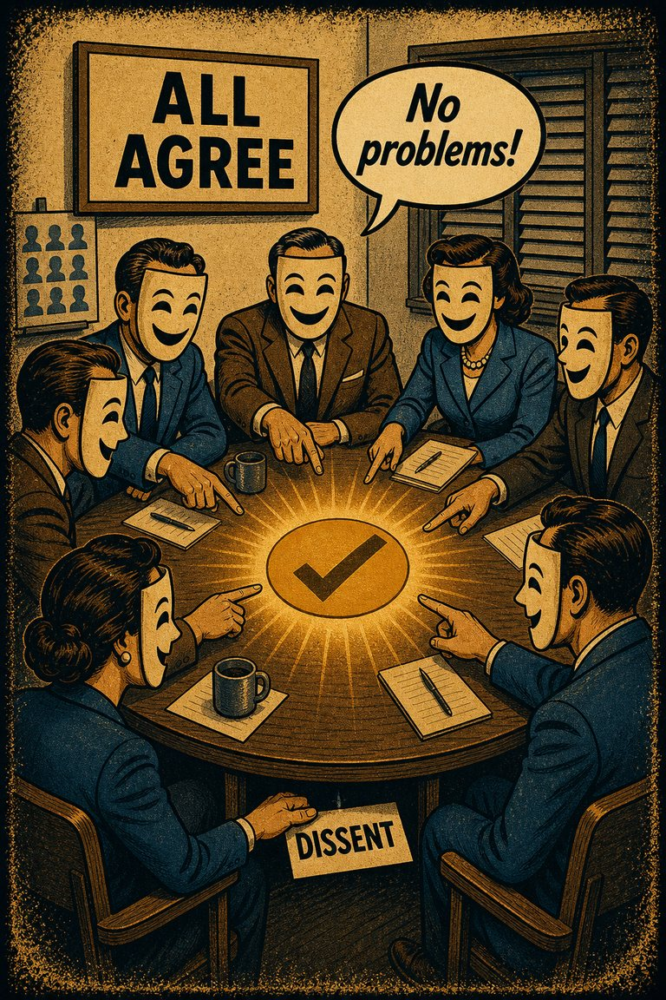
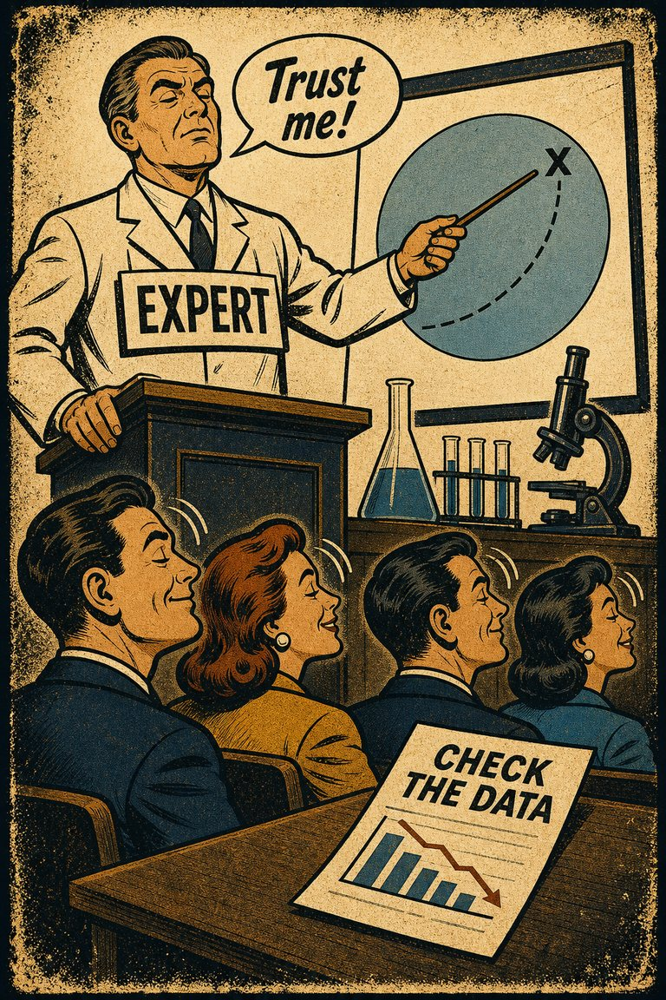
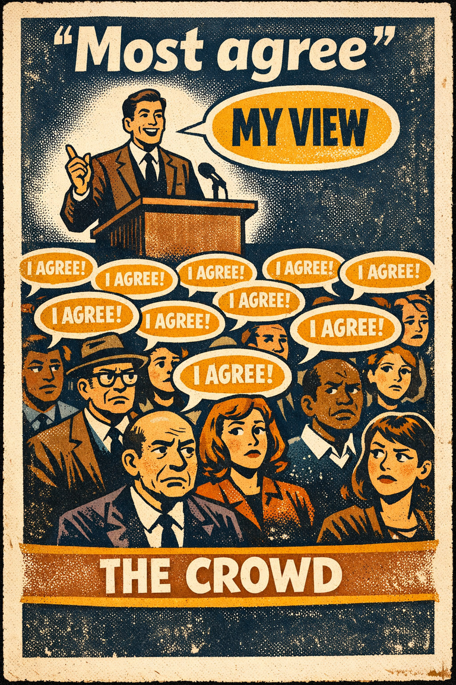

Groupthink
The tendency for groups to preserve harmony, cohesion, or momentum at the cost of critical evaluation and live dissent.
Hypothesis AssessmentAssociationTeams & managementPolitics & institutions

Cognitive Biases
A practical cognitive-bias site with clear definitions, learning paths, assessments, self-audits, and debiasing tools.
Learning Path
A path for the distortions that show up when agreement, status, loyalty, and fear of standing apart start doing cognitive work.
Work the pages in order, then loop back and compare which distortions happened earliest, which ones protected the first impression, and which ones interfered with later learning.
Next:
This is a deliberate sequence, not just a themed pile. Start at the top if the context is new to you.

The tendency for groups to preserve harmony, cohesion, or momentum at the cost of critical evaluation and live dissent.

The tendency to give excess weight to the opinion of a high-status or authoritative source independent of whether the source has earned that weight on the specific issue.
The tendency to over-report socially approved attitudes or behaviors and under-report the ones likely to invite embarrassment, judgment, or sanction.

The tendency to overestimate how many other people share one's own beliefs, preferences, habits, or reactions.
The tendency to favor, trust, defend, or positively interpret people and claims associated with one's own group more readily than comparable outsiders.
The tendency to push back against a perceived attempt to limit one's freedom of choice, sometimes by moving toward the very option one was being steered away from.